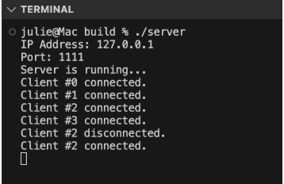
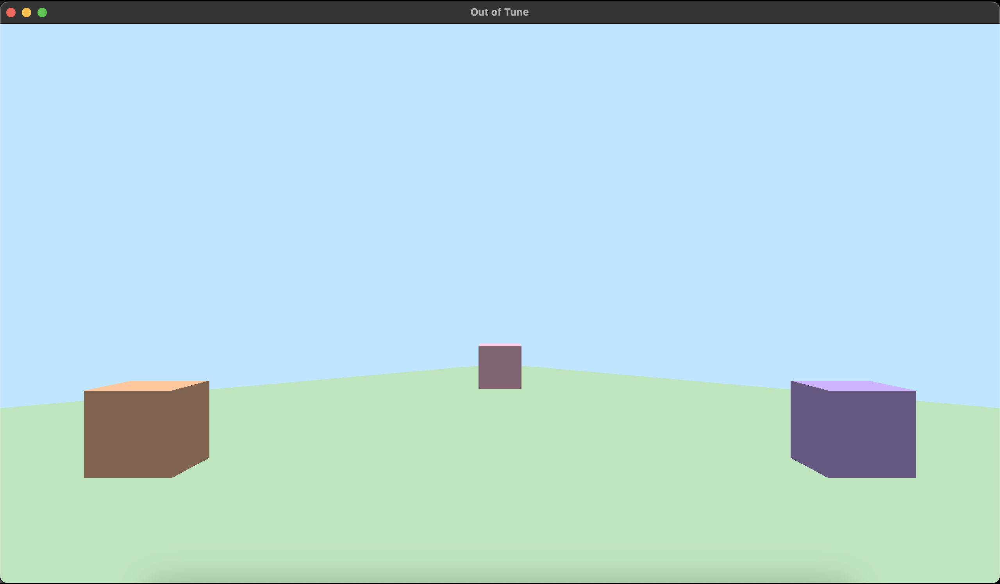

Group Status
We have integrated networking and graphics. Our game now renders players in 3D, and player movements are read by the server and broadcast to all players. Physics collision detection and response have yet to be integrated, but we have a rough implementation of AABB working. We agreed upon art styles for our game and began 3D modeling the general map and one of the minigames. Audio and music has undergone more brainstorming. Additionally, general game mechanics such as object interaction and a game timer have been implemented and are undergoing testing in a simplified ASCII game.
ScreenShot
Group Morale
Overall, the attitude of the group seems to be somewhat mixed between concerned and optimistic. It does seem like there is a lot left to be done, but we are in a similar position to where past groups were around this time, and we have some ideas of where to go from here. There has been good progress made, but we still have a lot left to do.
Individual Reports
Art (Jasmine):
What were your contrete goals for the week?
My main goal was to work on the swamp minigame room and create more sketches.
What goals were you able to accomplish?
I did make progress on the swamp room, but I wish I got more done. I was hesitant to put in a lot of effort into the details of the tree trunk room because we haven’t tested importing into the engine yet.
If the week went differently than you had planned, what were the reasons? note that this happens regularly…I would prefer you to be aggressive in what you want to try accomplish rather than limit yourself to goals you know you’ll easily achieve. so answering this question is more of a reflection on the development process and the surprises you encounter, it’s not at all an evaluation.
I wanted to make more assets but I’ve been conflicted since after our meeting with our professor and TA on Tuesday it sounded like I should wait until we have tested the models I’ve already made, but I don’t wanna waste time not working on models either and our graphics engine isn’t quite ready yet even though there has been a lot of good progress.
What are your specific goals for the next week?
If I need to wait longer, I will just start greyboxing by making extremely basic models of layouts of each room. This way I can make progress visualizing each room without committing too much effort into the small details and build with the expectation to change everything later once we figure out the Blender to our engine pipeline. I can also start researching and practicing making our character models since I think that is what I will struggle with the most later. So, my specific goal this week is to greybox every room, and if graphics is ready, I will test exporting settings with the graphics team to figure out our pipeline and clean up the rest of my current models according to the agreed upon settings.
What did you learn this week, if anything (and did you expect to learn it)?
I don’t think I really learned anything new. I did get our engine running on my machine though, which I hadn’t done previously because I am not in a programmer role on this team, but I did it now because I want to be familiar with the code and the process, especially if anyone needs help later.
What is your individual morale (which might be different from the overall group morale)?
A little frustrated because I wanted to work on my models more and make more progress, but I’m kind of in a weird position. But I think shifting to greyboxing will be a good idea for this week to help get around that. Otherwise, I think the overall vibe of the game is coming together nicely and I’m excited to keep working on fleshing out the art for this game! Screenshots of started swamp models + sketches of what I’ll add later in blue:
Music (Annie):
What were your contrete goals for the week?
My goal this week is to draft music tracks and working with Jasmine on drawing accurate music assets
What goals were you able to accomplish?
I found sfx for the swamp minigame specifically for the two animal sounds that will be used as the main notes. It’s in the gallery tab.
If the week went differently than you had planned, what were the reasons? note that this happens regularly…I would prefer you to be aggressive in what you want to try accomplish rather than limit yourself to goals you know you’ll easily achieve. so answering this question is more of a reflection on the development process and the surprises you encounter, it’s not at all an evaluation.
Last week, I wasn’t able to draft any music sketches because I was in a game jam. Now that the game jam is over, I should be able to start drafting this week. One thing I'm a little worried about is the workflow because the workflow felt similar to the waterfall method. In a way, I felt that I need to wait for the rest of the team to finalize their design and ideas first before I start delivering the audio asset. However I think I can resolve this during our team meetings and ask them which music or sfx they definitely want in the game.
What are your specific goals for the next week?
Testing out if I’m able to implement it in the FMOD library and have it to play a sound.
What did you learn this week, if anything (and did you expect to learn it)?
I learned some cool and creepy effects I can put on the sfx.
What is your individual morale (which might be different from the overall group morale)?
I feel a little bit concerned about the workflow method. But I believe that our team can find a way to work around this.
Graphics (Gabriel):
What were your concrete goals for the week?
My goals were to get a cube and world rendering, as well as integrating the graphics engine to the client and server.
What goals were you able to accomplish?
Both were accomplished, although I can’t really take credit for it.
If the week went differently than you had planned, what were the reasons? note that this happens regularly…I would prefer you to be aggressive in what you want to try accomplish rather than limit yourself to goals you know you’ll easily achieve. so answering this question is more of a reflection on the development process and the surprises you encounter, it’s not at all an evaluation.
The graphics engine seems to be seg faulting in Mac machines, so Julie couldn’t really use it. She still got cubes and a world rendering, but she built her code from scratch from what I understood. I wish we communicated a bit better, because now I have already put too much time into the graphics engine and I’m not really sure if we’re using it at all.
What are your specific goals for the next week?
If needed, I plan on fixing the graphics engine so it works on Mac too. I plan on abstracting drawing functions so that our group mates may easily use it from anywhere in the game engine. I plan on creating support for 3D model import.
What did you learn this week, if anything (and did you expect to learn it)?
I took my time to really understand some of the code that I had used from tutorials, and now I’m confident that I understand how shader programs work, and what it means to generate and bind buffers to configure and render vertices.
What is your individual morale (which might be different from the overall group morale)?
I’m feeling concerned about having to discard the graphics engine after spending so much time in it. I understand that we now have a solution that seems to work better on different platforms and even agree that sticking to it might be the best decision if the graphics engine doesn’t work on Mac, but it’d still be demoralizing to have all my work discarded. Because of that I’m unsure of what my goals are right now, it’ll depend on what the group decides.
General Game Implementation and Mini Games (William):
What were your contrete goals for the week?
Develop a ASCII game environment to test our class implementations.
What goals were you able to accomplish?
Made a simplified version of our room mechanics, with a locked door ‘+’, walls ‘#’and a player ‘@’. Player’s can interact with the locked door through pressing ‘e’.
If the week went differently than you had planned, what were the reasons? note that this happens regularly…I would prefer you to be aggressive in what you want to try accomplish rather than limit yourself to goals you know you’ll easily achieve. so answering this question is more of a reflection on the development process and the surprises you encounter, it’s not at all an evaluation.
Did not spend as much time as I would have liked. The goal was to be able to simulate the entire map, + the jumping mini game. Will continue working on it before the meeting to see if I get more done. Did make some design changes, such as adding a coord class, instead of having a local struct. Realized I needed it for room generation and the door placement.
What are your specific goals for the next week?
Prepare our classes and game so that it can be easily implemented with our graphics, physics, and networking team. Currently, my ASCII graphics is just a draw function that every object has, hopefully this translates to something similar to render() when graphics are implemented. Still have yet to develop networking API. Collision is just checking if we are moving onto a space other than ‘ ‘ in our 2d array. Not sure how we can transition into using our physics engine. But, having the ASCII display should help us better visualize what we need.
What did you learn this week, if anything (and did you expect to learn it)?
Nothing too important. Continued familiarizing myself with the C++ language.
What is your individual morale (which might be different from the overall group morale)?
Gonna have to start working more and spending time on this. I feel like I’ve had a bit of a slow start, perhaps because our work was a lot more design and discussion rather than programming. But hopefully our planning pays off and we can get the game running as soon as possible!
General Game Implementation and Mini Games (Ravi):
What were your contrete goals for the week?
My goals for this week were to implement the game timer, start implementing the doors/room/key interaction mechanics and potentially implement the final door.
What goals were you able to accomplish?
I was able to implement the timer, start on the key class, and I am currently working on the key/door interaction. I also added branch protection for the main branch and did some research into which c++ linters and autoformatters to use. I am now writing up a little tutorial on how to install the auto formatter in Visual Studio and VS Code.
If the week went differently than you had planned, what were the reasons? note that this happens regularly…I would prefer you to be aggressive in what you want to try accomplish rather than limit yourself to goals you know you’ll easily achieve. so answering this question is more of a reflection on the development process and the surprises you encounter, it’s not at all an evaluation.
The week went pretty well, and even though I didn’t completely finish the key class yet, I got other work done that wasn’t originally planned, so I feel like I did a good amount. I should also hopefully have my key class pushed by the time we meet on Tuesday.
What are your specific goals for the next week?
Next week I want to finish what I was working on this week, add a player death mechanism, and start working on implementing minigame 1. I also want to have us all install the auto formatter, and potentially add the linter to the github actions.
What did you learn this week, if anything (and did you expect to learn it)?
I learned more about abstract methods and overriding in c++, as well as how to implement game timers and different libraries that people use for that. I ended up just going with one we had already installed to avoid bloat. I also learned more about how the client and server interact and started thinking about what code to put where. I did expect to learn this.
What is your individual morale (which might be different from the overall group morale)?
I’m feeling optimistic about the game. Things are starting to come together, and the timeline feels more manageable now.
Physics (Brandon):
What were your contrete goals for the week?
My concrete goals for the week were to get collision detection and collision response working. I planned to test the physics and also begin integration with the other areas of development.
What goals were you able to accomplish?
I was able to get collision detection and collision response working ONLY for AABB. I have yet to implement collision physics with spheres, but for the sake of our game it might not be necessary, so skeleton code only exists. Additionally, the collision response might not be working as intended since one object is pushing another by user input, but I have yet to test multiple users pushing into each other.
If the week went differently than you had planned, what were the reasons? note that this happens regularly…I would prefer you to be aggressive in what you want to try accomplish rather than limit yourself to goals you know you’ll easily achieve. so answering this question is more of a reflection on the development process and the surprises you encounter, it’s not at all an evaluation.
Because of the development of the other areas of the codebase, such as graphics and networking, I could not get a good testing environment to locate any bugs. It is difficult to test physics when there is no visualization and only a terminal with numbers. Additionally, most of the physics happens with interactions in player-object and player-player, which is difficult to test without graphics and networking. Additionally, we were still figuring out what our goals for physics were, which decided that AABB was the only necessary collider.
What are your specific goals for the next week?
My specific goals for next week is integration with graphics and networking as well as testing and debugging the physics in order to achieve our simple goal in not walking through walls/players
What did you learn this week, if anything (and did you expect to learn it)?
I learned the importance of clarifying goals before development in order to speed up time of development, which I had not expected to learn. Additionally, I learned very minimal and basic collision detection and response of AABB, which are sufficient for the simplicity of our game. I also researched how games like Quake detect and resolve collisions in an efficient way, but for the sake of our game it is unnecessary.
What is your individual morale (which might be different from the overall group morale)?
I am feeling a lot more excited about this project than last week. It was reassuring to know that groups in the past had similar development time. Additionally, seeing all the work my teammates have done motivates me to put in the effort as well.
General Game Implementation and Mini Games (Helen Lin):
What were your contrete goals for the week?
Finish up the class setup and get started on the mini game. We as general game group also had a goal of wanting to get started on client server communication necessary for the object and the game
What goals were you able to accomplish?
Finished up the class setup and also we reword and redefined the process of one minigame as a team which was slightly different than I had anticipated. Redefined the minigame since people were confused as to which notes the high low pitch came determines the “high” and low” . Moved our website code over to the repo and set up the github actions for it.
If the week went differently than you had planned, what were the reasons? note that this happens regularly…I would prefer you to be aggressive in what you want to try accomplish rather than limit yourself to goals you know you’ll easily achieve. so answering this question is more of a reflection on the development process and the surprises you encounter, it’s not at all an evaluation.
One delay was knowing that portions of the class definition will require some handling on the server side which Julie was able to get a working version and merged in today (monday).
What are your specific goals for the next week?
I’m hoping to pick up the pace now that the client and server initial workings is in so it’ll be easier to clearer potentially on testing things and figuring out what goes where as there is something that can be worked with
What did you learn this week, if anything (and did you expect to learn it)?
Not really related to the game but learnt something new about github actions and getting it to work with secrets to set up the pushing for the website code over to the cse125 server. Haven’t worked with secrets/env variables in actions before. Also had to rethink more about ssh keys figuring out if github should have the private or public key. Wasn’t expecting to learn this since wasn’t initially planning to have the website code on github.
What is your individual morale (which might be different from the overall group morale)?
A little worried about progress still but getting hopeful things can pick up since the client and server integration are in, which a core thing that other development kind of revolves around
Network (Julie):
What were your contrete goals for the week?
My main goals for the week were to set up the basic client and server architecture, connect clients to the server, and spawn players as they join the game. I also wanted to make sure clients could handle keyboard movement input, send that input to the server, and have the server broadcast player states to all connected clients. On the client side, each player would receive those updates, process them, and update the rendering accordingly. I also planned to implement proper handling for player disconnections. Lastly, I planned to import a model that Jasmine designed.
What goals were you able to accomplish?
This week, I accomplished all of my planned goals except importing the model Jasmine designed.
I started by adding the Boost, Assimp, and JSON dependencies. Initially, I considered downloading only the specific Boost modules I needed, but quickly realized that it could introduce hard-to-debug issues due to complex internal dependencies. To avoid this, I switched to downloading the entire Boost library via CMake. Only the first CMake run takes long due to third-party downloads. I also updated the GitHub CI workflow to cache the build, significantly reducing test run times on each push.
Next, I worked on both the client and server. I created CMake files for each, and set up a system where the client connects to the server. The server supports up to 4 clients at a time, and I implemented reusable IDs–so when a client disconnects, that ID becomes available for a new connection.
Once a client successfully connects, the game window launches. I added core rendering components including a camera, shader, scene, cube mesh, and directional lighting. I added a floor, and players are spawned at predefined locations using cubes as temporary character placeholders. All player state is maintained on the server.
On the client side, I implemented keyboard input handling. Clients now support both WASD and arrow keys, with smooth, continuous input using polling instead of key callbacks–allowing for multiple keys to be held simultaneously. The client sends input actions to the server, which listens asynchronously. The server processes incoming message then broadcasts updated player states to all clients on a separate tick thread (every 30ms), and each client receives and applies the update.
Players can now:
- Move forward/backward
- Strafe left/right
- Move diagonally (by holding two keys)
- Have their camera automatically follow their position for a first-person perspective
I also added support for client disconnection: when a player disconnects, their character disappears from all other clients' views, and their ID and state are cleared on the server for reuse.
The server uses two threads: the main thread (for accepting connections) and a separate thread for processing client messages and broadcasting state. To ensure thread safety, I added a mutex to protect shared data like player states and message queues.
 If the week went differently than you had planned, what were the reasons? note that this happens regularly…I would prefer you to be aggressive in what you want to try accomplish rather than limit yourself to goals you know you’ll easily achieve. so answering this question is more of a reflection on the development process and the surprises you encounter, it’s not at all an evaluation.
I think the week went pretty much as planned.
What are your specific goals for the next week?
My main goals for this week are to import Jasmine’s models, add support for mouse movement, and improve the overall code structure by finalizing key design decisions–such as how many messages the server should process per client per tick. I also plan to make clients read server messages asynchronously, so the game loop remains responsive and can support things like background music, smooth rendering, and real-time UI updates.
What did you learn this week, if anything (and did you expect to learn it)?
This week, I learned more about boost::asio::streambuf. I realized that even when it's set to read until a newline ('\n'), it often reads more data than expected for efficiency. Because of this behavior, I couldn't define the buffer inside a local function–every time the function ran, it would create a new buffer and lose the previously read data. To fix this, I made streambuf a class member variable.
Now, the client has one persistent buffer, and the server maintains one buffer per client, stored in an unordered_map that maps client IDs to their buffers. I found boost::asio::streambuf really useful because it handles leftover data gracefully–it keeps the extra bytes and continues reading from where it left off on the next read.
What is your individual morale (which might be different from the overall group morale)?
I'm really grateful for all the learning opportunities. I'm excited to be learning so much—not just on the technical side, but also about how to work better with others. I read Gabriel's report for this week and was a bit surprised, because I felt like we communicated a lot.
I understand why he might feel that way, but I thought I had explained clearly that I needed to write my own shader code so I could quickly get a working version for testing and implementing the networking side. I told him that we'd lean into his graphics work as the project progresses, and that we'll go with whatever code works best for the game. I never said we'd discard his code. I also mentioned that our goal this quarter is to experiment, learn together, and communicate a lot.
When I tried running his code, I first ran into a segmentation fault. After fixing that, the triangle still didn't appear on my screen. I also checked in with him a few times and asked if he had any concerns, but he didn't share anything.
That said, I'm taking this as a learning experience too–and I'll try to be even more communicative moving forward.